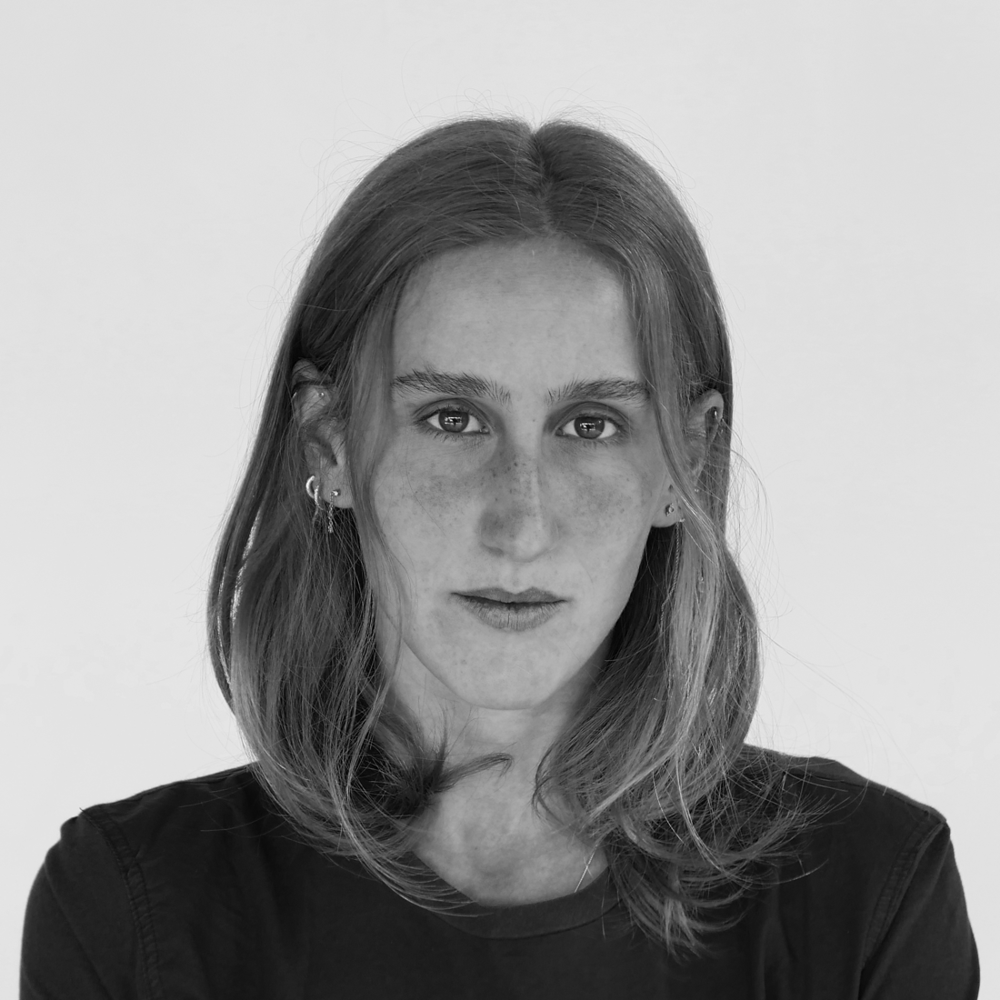
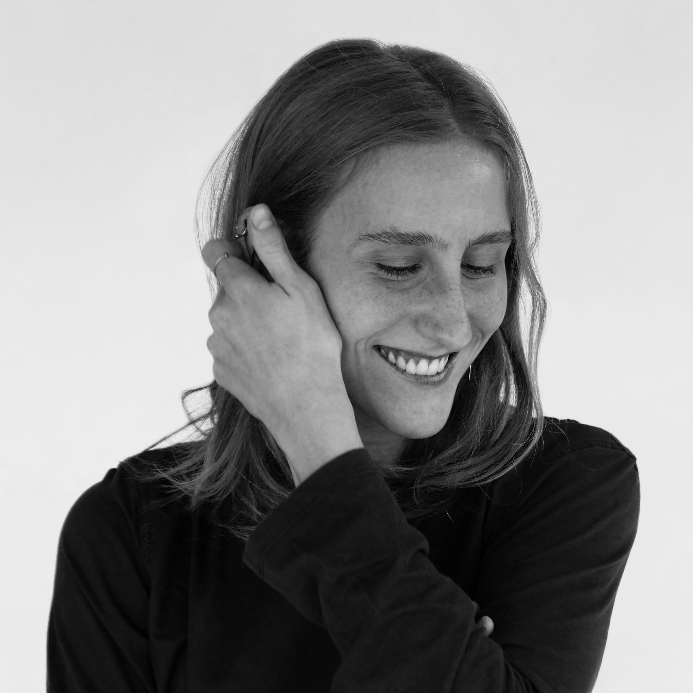

POR ELISA
Un archivo visual para reunir obra, fotografía,
objetos y procesos hechos a mano.
Archivo
Obras, series y registros.
Bio
Elisa Cipriani es una diseñadora multidisciplinaria.
Explora el arte, la moda y la cultura a través de prácticas manuales. Su práctica cruza fotografía, ilustración, diseño y trabajo artesanal. Le interesa crear proyectos con identidad propia, donde la imaginación y la sensibilidad puedan abrir universos nuevos.
Contacto
Para colaborar o simplemente conversar sobre arte y cultura, podés escribirle a Elisa.